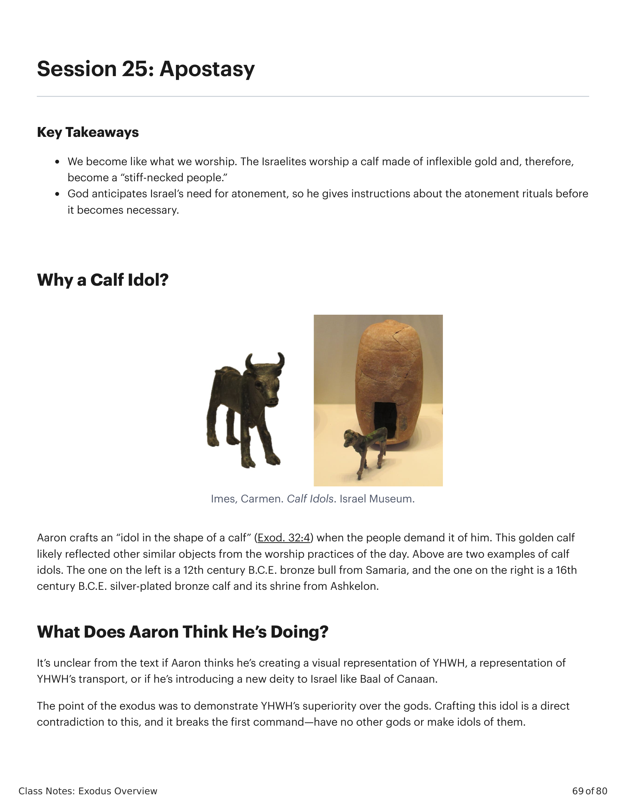
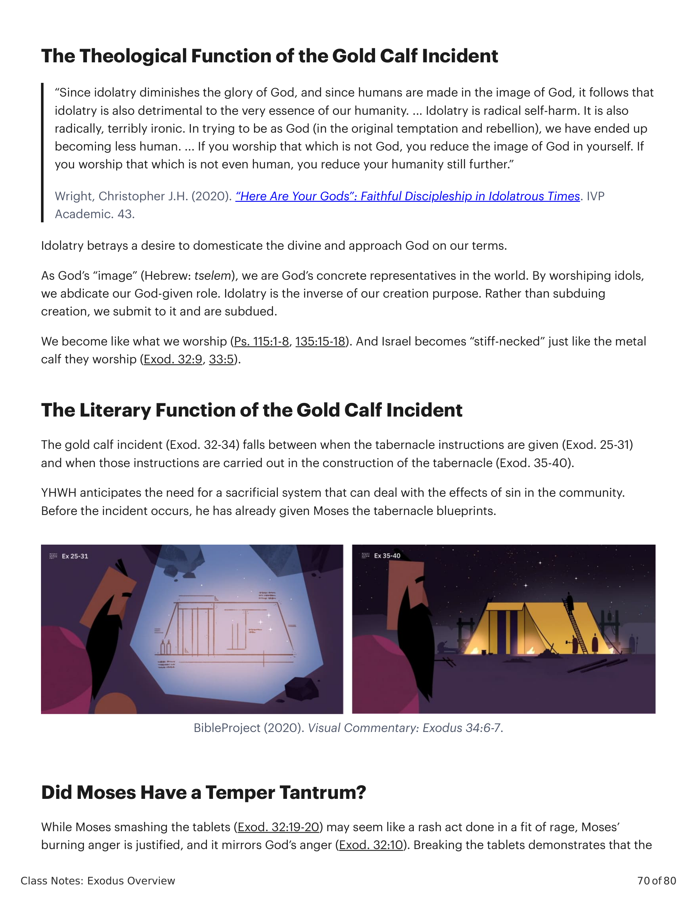
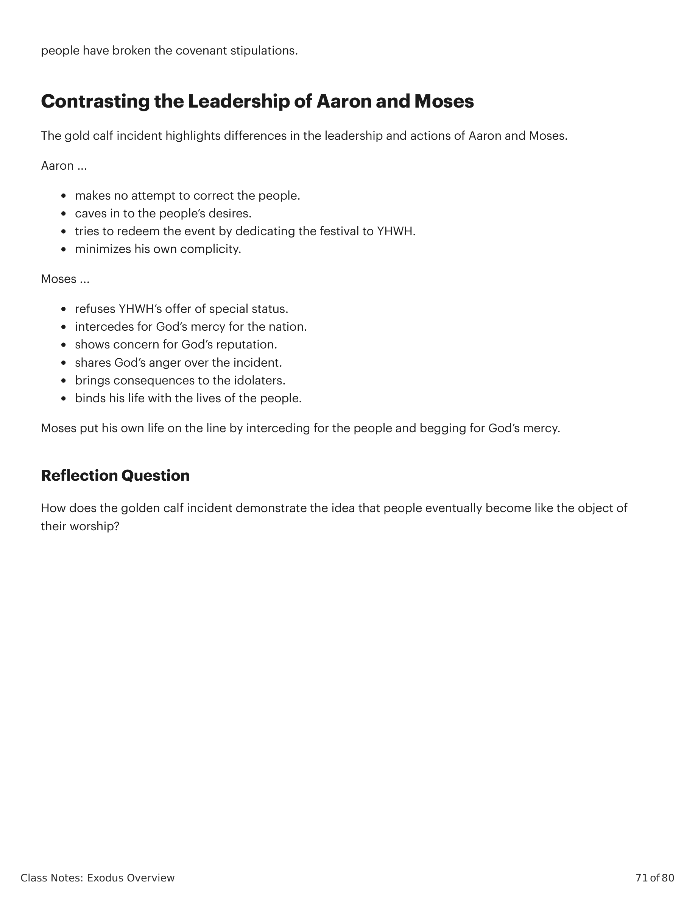

Sessão 25: ApostasiaSession 25: Apostasy
Class Notes: Exodus Overview
69 of 80
Session 25: Apostasy
Key Takeaways
We become like what we worship. The Israelites worship a calf made of inflexible gold and, therefore,
become a "stiff-necked people."
God anticipates Israel's need for atonement, so he gives instructions about the atonement rituals before
it becomes necessary.
Why a Calf Idol?
Imes, Carmen. Calf Idols. Israel Museum.
Aaron crafts an "idol in the shape of a calf" (Exod. 32:4) when the people demand it of him. This golden calf
likely reflected other similar objects from the worship practices of the day. Above are two examples of calf
idols. The one on the left is a 12th century B.C.E. bronze bull from Samaria, and the one on the right is a 16th
century B.C.E. silver-plated bronze calf and its shrine from Ashkelon.
What Does Aaron Think He's Doing?
It's unclear from the text if Aaron thinks he's creating a visual representation of YHWH, a representation of
YHWH's transport, or if he's introducing a new deity to Israel like Baal of Canaan.
The point of the exodus was to demonstrate YHWH's superiority over the gods. Crafting this idol is a direct
contradiction to this, and it breaks the first command—have no other gods or make idols of them.

Êxodo X:Y. Tradução e Design Literário por Tim Mackie para BibleProject Classroom: Êxodo (2021).Exodus X:Y. Translation and Literary Design by Tim Mackie for BibleProject Classroom: Exodus (2021).
Class Notes: Exodus Overview
70 of 80
The Theological Function of the Gold Calf Incident
"Since idolatry diminishes the glory of God, and since humans are made in the image of God, it follows that
idolatry is also detrimental to the very essence of our humanity. ... Idolatry is radical self-harm. It is also
radically, terribly ironic. In trying to be as God (in the original temptation and rebellion), we have ended up
becoming less human. ... If you worship that which is not God, you reduce the image of God in yourself. If
you worship that which is not even human, you reduce your humanity still further."
Wright, Christopher J.H. (2020). "Here Are Your Gods": Faithful Discipleship in Idolatrous Times. IVP
Academic. 43.
Idolatry betrays a desire to domesticate the divine and approach God on our terms.
As God's "image" (Hebrew: tselem), we are God's concrete representatives in the world. By worshiping idols,
we abdicate our God-given role. Idolatry is the inverse of our creation purpose. Rather than subduing
creation, we submit to it and are subdued.
We become like what we worship (Ps. 115:1-8, 135:15-18). And Israel becomes "stiff-necked" just like the metal
calf they worship (Exod. 32:9, 33:5).
The Literary Function of the Gold Calf Incident
The gold calf incident (Exod. 32-34) falls between when the tabernacle instructions are given (Exod. 25-31)
and when those instructions are carried out in the construction of the tabernacle (Exod. 35-40).
YHWH anticipates the need for a sacrificial system that can deal with the effects of sin in the community.
Before the incident occurs, he has already given Moses the tabernacle blueprints.
BibleProject (2020). Visual Commentary: Exodus 34:6-7.
Did Moses Have a Temper Tantrum?
While Moses smashing the tablets (Exod. 32:19-20) may seem like a rash act done in a fit of rage, Moses'
burning anger is justified, and it mirrors God's anger (Exod. 32:10). Breaking the tablets demonstrates that the

Êxodo X:Y. Tradução e Design Literário por Tim Mackie para BibleProject Classroom: Êxodo (2021).Exodus X:Y. Translation and Literary Design by Tim Mackie for BibleProject Classroom: Exodus (2021).
Class Notes: Exodus Overview
71 of 80
people have broken the covenant stipulations.
Contrasting the Leadership of Aaron and Moses
The gold calf incident highlights differences in the leadership and actions of Aaron and Moses.
Aaron ...
makes no attempt to correct the people.
caves in to the people's desires.
tries to redeem the event by dedicating the festival to YHWH.
minimizes his own complicity.
Moses ...
refuses YHWH's offer of special status.
intercedes for God's mercy for the nation.
shows concern for God's reputation.
shares God's anger over the incident.
brings consequences to the idolaters.
binds his life with the lives of the people.
Moses put his own life on the line by interceding for the people and begging for God's mercy.
Reflection Question
How does the golden calf incident demonstrate the idea that people eventually become like the object of
their worship?

Êxodo X:Y. Tradução e Design Literário por Tim Mackie para BibleProject Classroom: Êxodo (2021).Exodus X:Y. Translation and Literary Design by Tim Mackie for BibleProject Classroom: Exodus (2021).